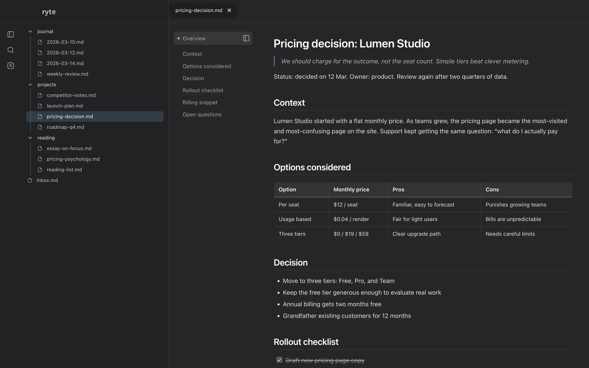

Find the note you remember.
Ryte is a free Markdown viewer for Mac that searches across all of your notes. Add a ChatGPT or Claude key to turn on AI summaries.

Ryte is a free Markdown viewer for Mac that searches across all of your notes. Add a ChatGPT or Claude key to turn on AI summaries.
